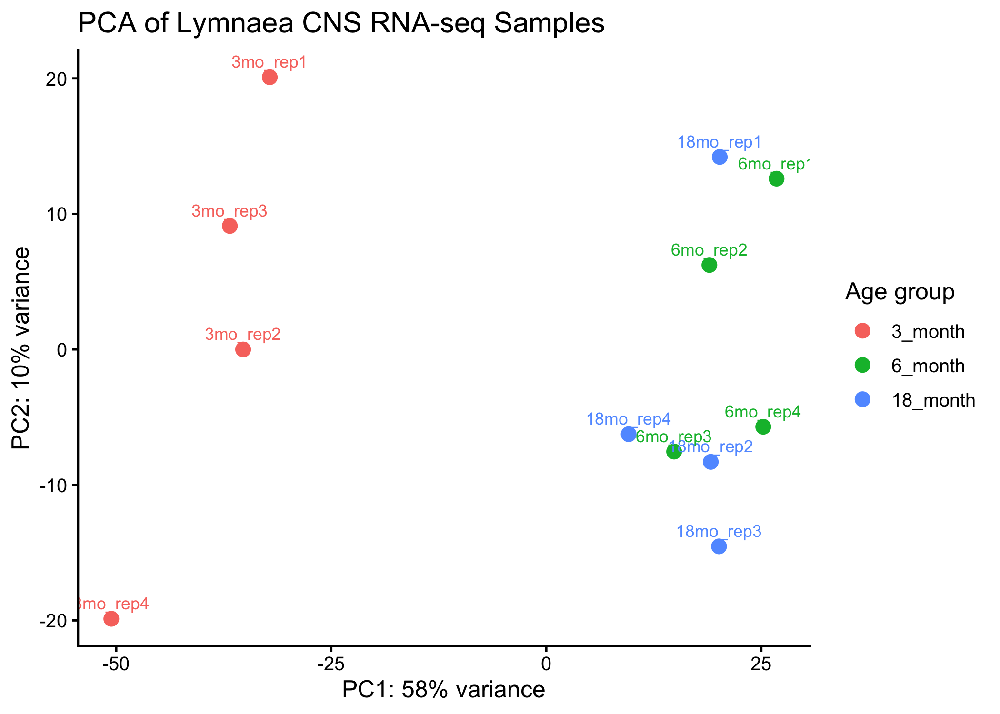
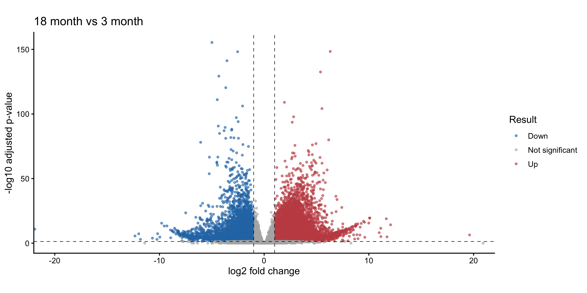
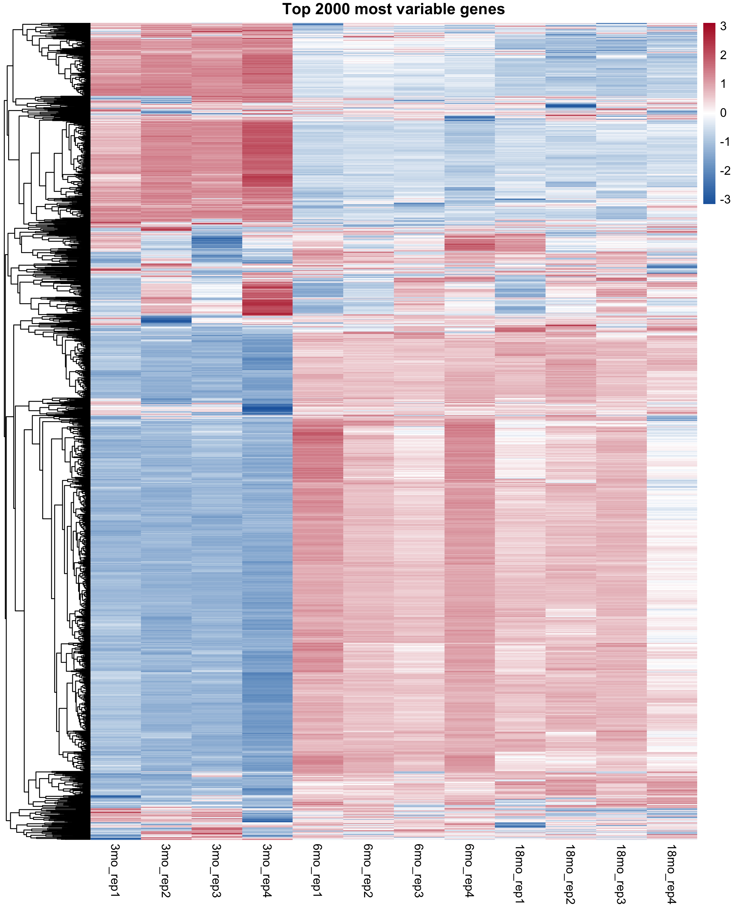
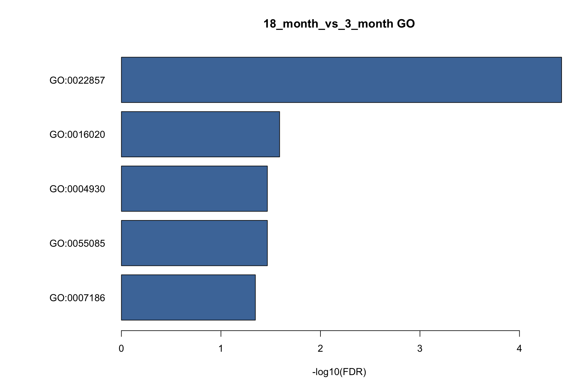
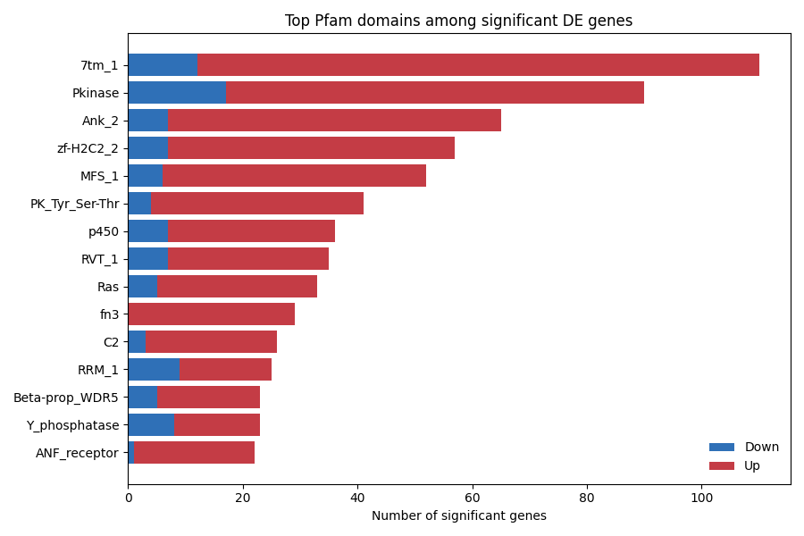

Age-related expression shifts
PCA and volcano plots showed clear transcriptomic differences among CNS age groups, with strong old-vs-young differential expression.
RNA-seq reproduction project
A reproducible walkthrough of read processing, differential expression, protein annotation, and functional enrichment inspired by Rosato et al. 2021.
I started by translating the paper's methods into a concrete local pipeline: organize SRA metadata, align reads to the L. stagnalis genome, quantify expression, run DESeq2, predict ORFs with TransDecoder, and annotate predicted proteins.
PCA and volcano plots showed clear transcriptomic differences among CNS age groups, with strong old-vs-young differential expression.
Pfam domains and BLASTP-supported TransDecoder predictions provided interpretable protein-level annotations for many predicted ORFs.
GO enrichment found significant terms in the old-vs-young comparison. KEGG KO annotations were generated with KofamScan, while KO enrichment was treated cautiously when FDR support was weak.





Blast2GO was not used because the command-line tool requires licensed activation. eggNOG-mapper was also skipped after database download issues. The final open-source route uses Pfam2GO for GO terms and KofamScan for KEGG Orthology annotations.